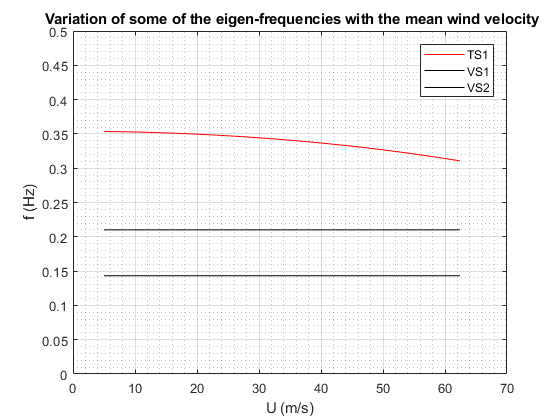
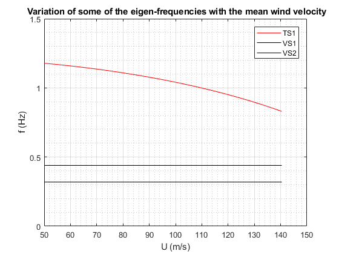

Example
The Critical flutter velocity is computed for 2 single-span suspension bridges: One with a main span of 1.2 km and the other one with the main span of 0.45 km. The coupling of the lateral, vertical and torsional motions of the bridge are accounted for the calculation of the critical velocity. The function flutterFD estimates the flutter velocity using [1]. For comparison, the Selberg's [2] and Rocard's [3] algorithm are also used (function VcrFlutter).
References
[1] Jain, A., Jones, N. P., & Scanlan, R. H. (1996). Coupled aeroelastic and aerodynamic response analysis of long-span bridges. Journal of Wind Engineering and Industrial Aerodynamics, 60, 69-80.
[2] Selberg, A., & Hansen, E. H. (1966). Aerodynamic stability and related aspects of suspension bridges.
[3] Rocard, Y. (1963). Instabilite des ponts suspendus dans le vent-experiences sur modele reduit. Nat. Phys. Lab. Paper, 10.
Contents
Case of a suspension bridge with a main-span of 1200 m
clearvars;close all;clc; % Input the bridge parameters % Modal parameters load('modalParameters_case1.mat','wn','phi'); % load the mode shapes and eigen frequencies % The modal parameters can be computed using another Matlab FileExchange % submission available here: % https://se.mathworks.com/matlabcentral/fileexchange/51815-calculation-of-the-modal-parameters-of-a-suspension-bridge [Ndof,Nmodes,Nyy] = size(phi); Bridge.wn= wn; % eigen frequencies (rad/s) Bridge.phi= phi; % Mode shapes Bridge.zetaStruct = 5e-3*ones(Ndof,Nmodes); % structural modal damping ratios, chosen as the same for every mode. % Structural parameters Bridge.L = 1200 ; % length of main span (m) Bridge.B = 20 ; % deck width (m) Bridge.D = 3; % Deck height (m) Bridge.m =13e3 ; % lineic mass of the girder + the two main cables (kg/m) Bridge.m_theta = 0.43e6; %kg.m^2/m torsional mass % static coefficient for lift and overturning moment Bridge.Cd = 1;% drag coefficient Bridge.dCd = 0;% first derivative of the drag coefficient Bridge.Cl = -0.3;% lift coefficient Bridge.dCl = 3.0;% first derivative of the lift coefficient Bridge.Cm = 0.01 ;% Overturning moment coefficient Bridge.dCm = 0.5 ;% first derivative of the overturning moment coefficient % Compute the critical flutter velocity [Ucr,wCr,meanU] = flutterFD(Bridge,'Nfreq',2000,'Niter',300); % Comparison with selberg's method (2 expressions) and Rocard's method: fz = Bridge.wn(2,2)./(2*pi); % Mode HS1 ftheta= Bridge.wn(3,1)./(2*pi); % mode TS1 [Vcr] = VcrFlutter(Bridge.B,Bridge.m,Bridge.m_theta,fz,ftheta,'method','Selberg1'); fprintf([' Cricial flutter velocity with Selberg''s formula 1 is: ',num2str(Vcr,4),' m/s \n']) [Vcr] = VcrFlutter(Bridge.B,Bridge.m,Bridge.m_theta,fz,ftheta,'method','Selberg2'); fprintf([' Cricial flutter velocity with Selberg''s formula 2 is: ',num2str(Vcr,4),' m/s \n']) [Vcr] = VcrFlutter(Bridge.B,Bridge.m,Bridge.m_theta,fz,ftheta,'method','Rocard'); fprintf([' Cricial flutter velocity with Rocard''s formula is: ',num2str(Vcr,4),' m/s \n']) % Display the variation of the eigen freqiencies with the mean wind % velocity clf,close all; figure title(' Variation of some of the eigen-frequencies with the mean wind velocity') hold on; box on; plot(meanU,squeeze(wCr(:,3,1))/(2*pi),'r') plot(meanU,squeeze(wCr(:,2,2:3))/(2*pi),'k') ylim([0,0.5]) grid on; box on; grid minor xlabel('U (m/s)'); ylabel('f (Hz)'); legend('TS1','VS1','VS2') set(gcf,'color','w')
Critical velocity for coupled flutter found! Vcr = 62.391 m/s Cricial flutter velocity with Selberg's formula 1 is: 65.82 m/s Cricial flutter velocity with Selberg's formula 2 is: 65.64 m/s Cricial flutter velocity with Rocard's formula is: 65.39 m/s
Case of the Lysefjord Bridge (main-span of 446 m)
clearvars;close all; load('modalParameters_case2.mat'); [Ndof,Nmodes,Nyy] = size(phi); Bridge.wn= wn; % eigen frequencies (rad/s) Bridge.phi= phi; % Mode shapes Bridge.zetaStruct = 5e-3*ones(Ndof,Nmodes); % structural modal damping ratios, chosen as the same for every mode. % Structural parameters Bridge.L = 446 ; % length of the main span (m) Bridge.B = 12.3 ; % deck width (m) Bridge.D = 2.76; % Deck height (m) Bridge.m = 6166; % lineic mass of the girder + the two main cables (kg/m) Bridge.m_theta = 59e3; %kg.m^2/m torsional mass % static coefficient for lift and overturning moment Bridge.Cd = 1;% drag coefficient Bridge.dCd = 0;% first derivative of the drag coefficient Bridge.Cl = 0.1;% lift coefficient Bridge.dCl = 3.0;% first derivative of the lift coefficient Bridge.Cm = 0.01 ;% Overturning moment coefficient Bridge.dCm = 1 ;% first derivative of the overturning moment coefficient % Compute the critical flutter velocity [Ucr,wCr,meanU] = flutterFD(Bridge,'Nfreq',2000,'Niter',200,'Umin',50,'Umax',200); % Comparison with selberg's method (2 expressions) and Rocard's method: fz = wn(2,2)./(2*pi); % Mode HS1 ftheta= wn(3,1)./(2*pi); % mode TS1 [Vcr] = VcrFlutter(Bridge.B,Bridge.m,Bridge.m_theta,fz,ftheta,'method','Selberg1'); fprintf([' Cricial flutter velocity with Selberg''s formula 1 is: ',num2str(Vcr,4),' m/s \n']) [Vcr] = VcrFlutter(Bridge.B,Bridge.m,Bridge.m_theta,fz,ftheta,'method','Selberg2'); fprintf([' Cricial flutter velocity with Selberg''s formula 2 is: ',num2str(Vcr,4),' m/s \n']) [Vcr] = VcrFlutter(Bridge.B,Bridge.m,Bridge.m_theta,fz,ftheta,'method','Rocard'); fprintf([' Cricial flutter velocity with Rocard''s formula is: ',num2str(Vcr,4),' m/s \n']) % Display the variation of the eigen freqiencies with the mean wind % velocity clf,close all; figure title(' Variation of some of the eigen-frequencies with the mean wind velocity') hold on; box on; plot(meanU,squeeze(wCr(:,3,1))/(2*pi),'r') plot(meanU,squeeze(wCr(:,2,2:3))/(2*pi),'k') ylim([0,1.5]) grid on; grid minor xlabel('U (m/s)'); ylabel('f (Hz)'); legend('TS1','VS1','VS2') set(gcf,'color','w')
Critical velocity for coupled flutter found! Vcr = 140.45 m/s Cricial flutter velocity with Selberg's formula 1 is: 154.3 m/s Cricial flutter velocity with Selberg's formula 2 is: 153.9 m/s Cricial flutter velocity with Rocard's formula is: 150.6 m/s